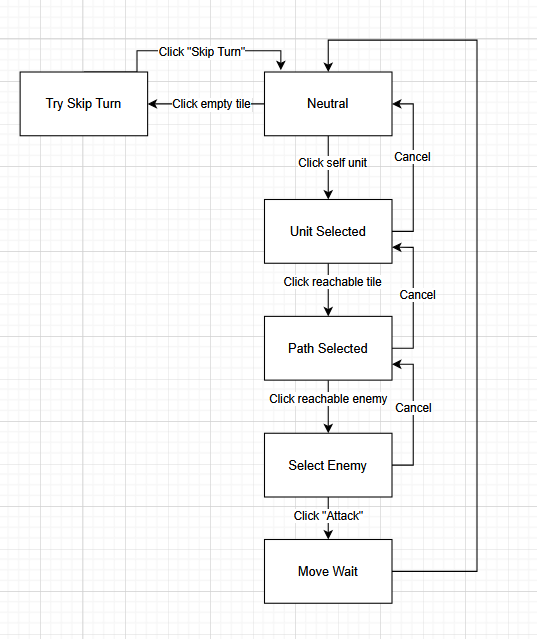
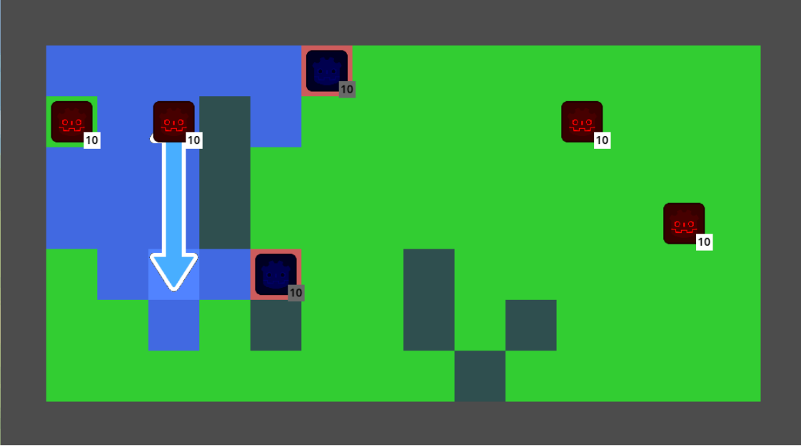
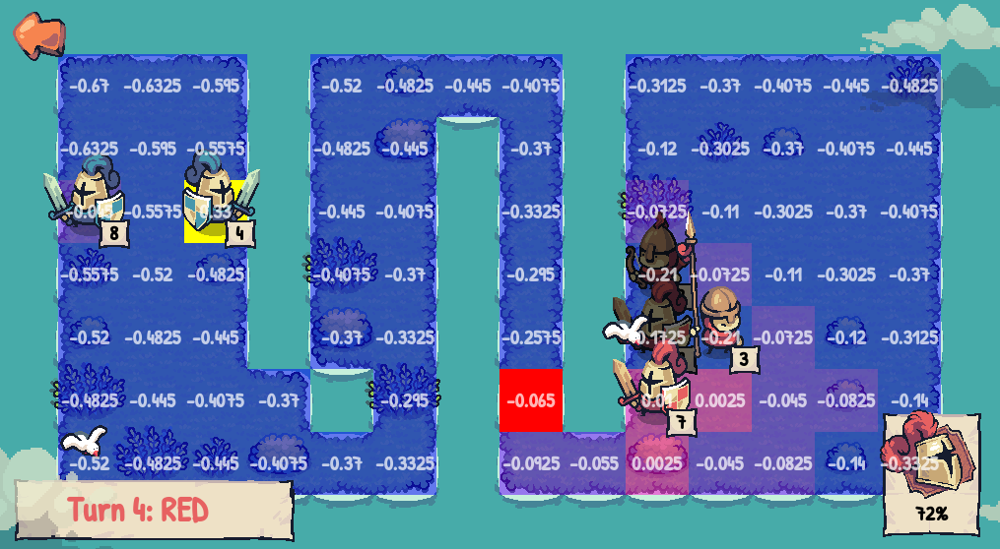
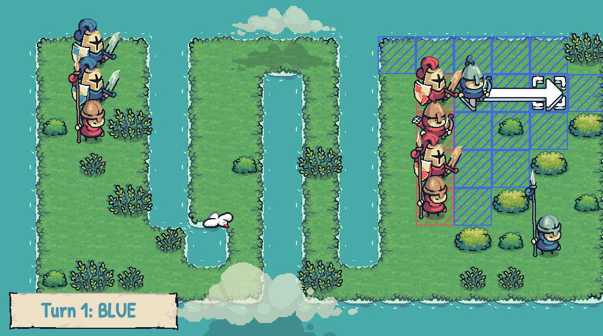
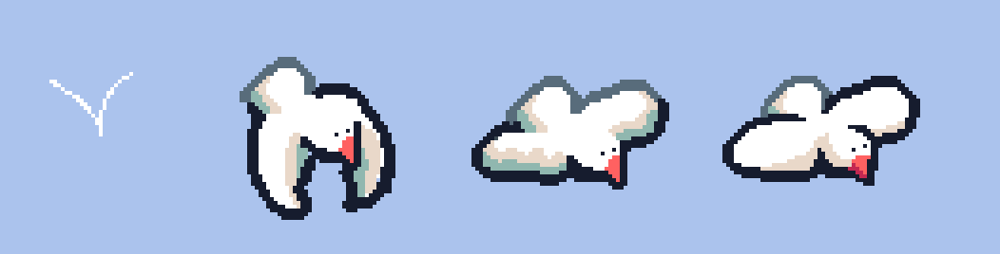

Wargroove Recreation
Made with: Godot
The project
The goal of this project was to recreate the core mechanics of Wargroove, a tactical RPG, with Godot.
My end-goal was to build a test level with a limited feature set (movements and attacks only), but with high quality, and three distinct units.
As I'm more experience with Unity, this project was a good opportunity to challenge myself on two areas:
- Improve my Godot skills with a genre that requires a solid and well-structured code architecture
- Analyze Wargroove and faithfully reproduce its main mechanics and technical choices.
Overview
Wargroove is a tactical RPG developed by Chucklefish, where a unit's health affects its damage output.
I chose it for its minimalistic design and its well-documented rules, making it ideal to quickly reproduce its core gameplay loop.
From the start, I knew maintaining a clear structure was essential.
To achieve this, I played the first levels of Wargroove, analyzed how everything worked and took detailed notes (e.g.: "What happens when I click this tile at that time?" "What does right click do when this unit is selected?")
These notes allowed me to identify all the required interactions before even writing any code, and could design my architecture accordingly.
To improve readability and debuggability, I separated the game flow in states, each in its own class.

As I was still getting familiar with Godot, I also looked up best practices for developing tactical RPGs with the engine.
This led me to discover the AStarGrid2D class, which handles the A* pathfinding logic, saving me development time and providing a higher level of abstraction.
There was only one case where I wanted more control over the pathfinding logic, but I found a workaround. Overall, it proved far more beneficial than limiting.
Organization
I know one of my current weaknesses as a developer is overthinking, so I decided to try to break down the project into very small tasks, and focused on completing one at a time.
Because each task was simple, I avoided overthinking while maintaining a strong sense of progress.
I also tend to polish too early, so I also deliberately built a rough, unpolished prototype first, to prioritize functionality before visuals.
As a result, development felt faster, and the core loop was done quickly, without overthinking.

An image of my prototype, purposefully ugly at that point
AI
Since tactical RPGs typically oppose two factions, implementing enemy AI was essential.
There are a lot of ways to make AI behaviors for tactical RPGs, but I knew Wargroove uses a heatmap system, where each tile is scored and decisions are based on those values.
I built my own implementation of the heatmap system, taking into account factors such as:
- Can the unit reach/attack/kill another?
- Is the unit in danger of being attacked/killed on this tile?
- Is the unit protected by nearby allies on this tile?
- How far away is the ideal attack target?
I then assigned points to each tiles based on these factors. For instance, a tile that allows a kill is rated higher than one that allows only an attack.
I also separated the "target tile" and the "actual tile", so the AI can plan ahead even when it can't reach an enemy in one turn.
Balancing was challenging, but I think I managed to create a cohesive AI that takes natural decisions, simultaneously trying to attack enemies and taking care of themselves by avoiding death.
For a full game, there would still be room for improvement, like by adding more parameters, refining balance, or planning a strategy several turns ahead.

The heatmap visualization of one AI (the target tile in bright yellow and the actual tile in bright red)
Polish & Feedbacks
Once the game loop was functional, it was time to get started on visuals and feedbacks!
I started by using an asset pack from Pixelfrog to improve the game's visual quality.

I took the time to polish every inch of the game, with animations, VFX, SFX, screen shake, to bring the experience closer to a finished project, and not just a prototype.
For instance, to add more life to the scene, I added ambient elements like birds flying around.
So I challenged myself to create a custom bird animation, respecting the asset pack's style.

(The versioning of the bird's animation, from the rough placeholder to the final asset)
Conclusion
This project helped me deepen my understanding of both Godot and Tactical RPGs implementation.
Analyzing an existing game as if following design instructions was also a valuable learning experience.
The result has still has opportunities for growth, whether by polishing even further or by adding other essential mechanics to Wargroove, like captures, critical hits or weather.
Finally, adopting a small tasks workflow and separating the core loop from the polish allowed me to be significantly more efficient.
Here's the final result: